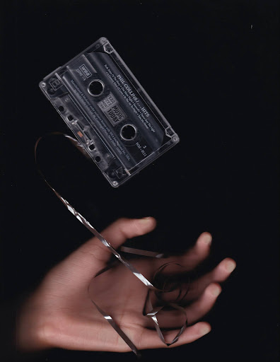

KNOWLEDGE IN MOTION
traverse the land of science and discovery

Unveiling the Link between Trait Empathy and Music
April 1, 2025
Music gives us an inner glimpse of those around us and fosters the development of empathic relationships with others. The research article titled, “Neurological Effects of Trait Empathy in Music Listening” delves into two experiments conducted by Wallmark et al. (2018) concerning the psychological connection between musical experience and empathy.

Ritika Mhatre
BLAH
-
 Lorem
Lorem
Sed mattis nunc -
 Ipsum
Ipsum
Praes tinci sed -
 Dorum
Dorum
Ultricies congue
Popular Posts

Popular Posts
-
Lorem
Sed mattis nunc -
Ipsum
Praes tinci sed -
Dorum
Ultricies congue